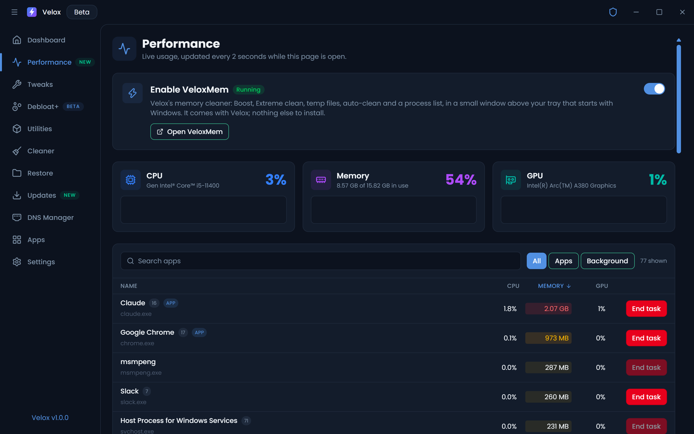
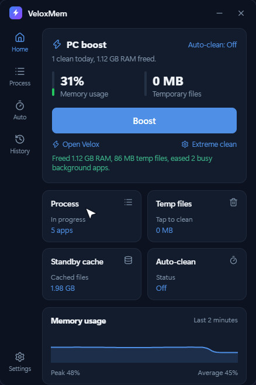
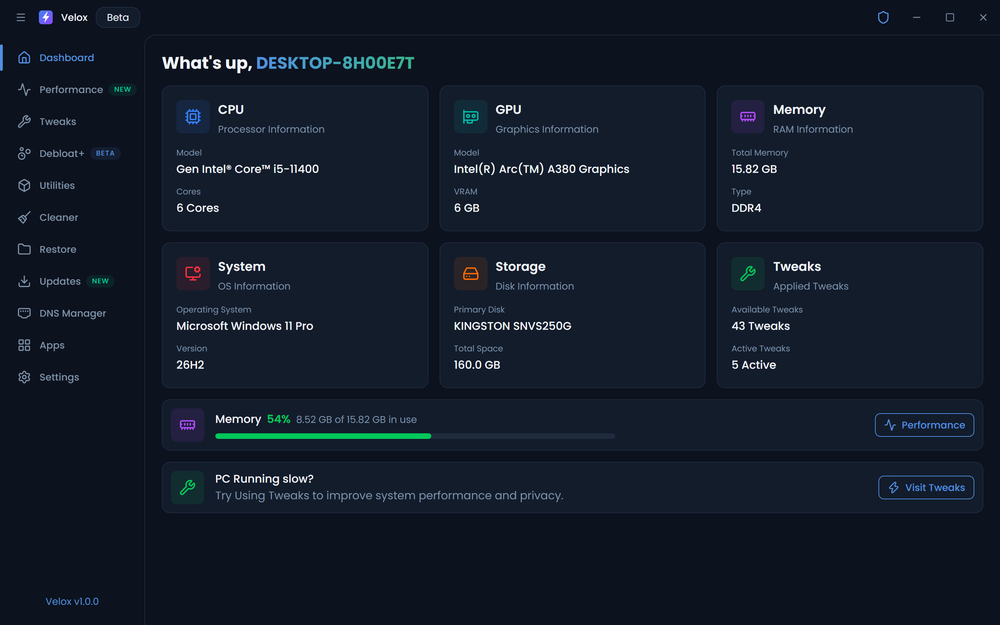

Tune Windows. Free memory. Stay fast.
Open-source tool to tune Windows 10 and 11: tweaks, debloat, cleanup and live performance graphs, with a one-tap memory cleaner in your tray.
Features
Everything to keep Windows lean
One app instead of a folder full of scripts. Every change is explained, and most can be undone.
Tweaks
43 tweaks for privacy, gaming, power and responsiveness. Toggle on, toggle back off.
Debloat+
Remove preinstalled apps and the extras Windows ships with that you never asked for.
Cleaner
Clear temp files, caches and leftovers to win back disk space.
Restore points
Create and roll back system restore points before you change anything.
Windows Updates
Take control of how and when Windows Update runs on your PC.
DNS Manager
Switch to a faster or more private DNS provider in one click.
Apps installer
Pick the apps you use and install them together, no hunting for installers.
Utilities
16 one-click fixes: System File Checker, DISM repair, Check Disk, network reset, Fix Bluetooth and more.
Live performance
See CPU, memory and GPU in real time, updated every two seconds while the page is open. The app list shows what each program is using, highlights the heavy ones, and lets you end a task right there.
- CPU, memory and GPU graphs side by side
- Per-app CPU, memory and GPU usage
- End task on anything that misbehaves

VeloxMem: one-tap Boost
A small memory cleaner that lives above your tray. It comes with Velox; switch it on from the Performance page and it's always one click away.
Frees RAM, clears temp files and calms background CPU, with no lag.
A checklist of what to close. It asks before stopping running dev servers.
See how much temp data has piled up and clear it in one tap.
Running apps with their icons and memory use, and End task beside each.
Let VeloxMem keep memory in check automatically in the background.
The last two minutes of memory use, with peak and average.

Take the tour
Every page, for real
Real screenshots of Velox 1.0, nothing mocked up.

Why Velox
One app instead of five
How Velox compares with what most people use today.
Velox vs
Based on typical tools in each group; individual products vary. Partly counts as half a point.
FAQ
Questions, answered
Is Velox safe to use?
Yes. Velox can make a restore point before you change anything, every tweak can be switched back off, and the code is open on GitHub so you can read exactly what each change does.
Why does it need administrator rights?
Tweaks change Windows settings, and memory cleaning uses Windows memory controls; both only work as administrator. Velox asks once when it starts.
Windows says “Windows protected your PC”. What do I do?
The installer isn't code-signed yet, so Windows SmartScreen warns about it. Click More info, then Run anyway.
Does Velox send any data?
No. There are no analytics or tracking. It only goes online for things you ask for, like installing apps or changing DNS.
What is VeloxMem?
A small memory cleaner that comes with Velox and lives above your tray. Turn it on from Velox (Performance or Settings) and it starts with Windows: one-tap Boost, Extreme clean, temp-file clean, a process list and auto-clean.
Will Boost or Extreme clean slow my PC down?
Boost only frees memory from background apps, so what you're using stays fast. Extreme clean frees the most, and apps reload what they need afterwards, so the PC can be slower for a minute; it also asks before stopping any running dev server.
Does it work on Windows 10?
Yes, Windows 10 and Windows 11, 64-bit.
How do I undo a tweak or uninstall Velox?
Switch the tweak off on the Tweaks page, or go back to a restore point from the Restore page. Uninstall Velox from Windows Settings like any other app.
Get Velox
Free and open source. Install it, or grab the portable build and run it from anywhere.
v1.0.0 · Windows 10 & 11 · Free and open source (GPL-3.0)
The installer isn't code-signed yet. If Windows shows “Windows protected your PC”, click More info → Run anyway.
Velox runs as administrator; tweaks and memory cleaning need it.